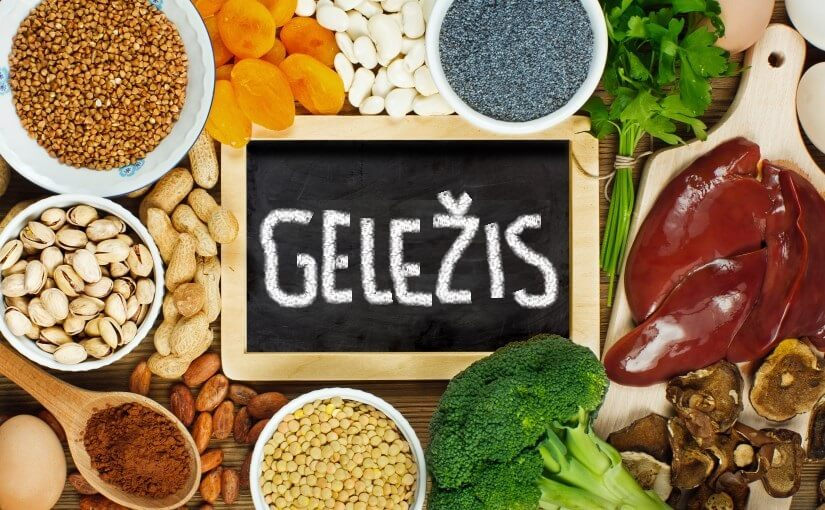

Geležis | Vitaminai.lt
 Prekių krepšelis 0 Bendra suma: € PIRKTI Prisijungti Informacija pirkėjui Kontaktai Sveikatos BIBLIOTEKA VITAMINAI ir maisto PAPILDAIPagal paskirtį
PMS | MENSTRUACIJOMS | MENOPAUZEI LIEKNĖJIMUI GROŽIUI ODAI PLAUKAMS NAGAMS NĖŠTUMUI | ŽINDYMUI AUGIMUI BRENDIMUI VYRIŠKUMUI ILGAAMŽIŠKUMUI ŽUVŲ TAUKAI IMUNITETUI SUSIRGUS ENERGIJAI AKIMS SMEGENIMS NERVAMS SĄNARIAMS KAULAMS SPORTUOJANTIEMS ŠIRDŽIAI RAUMENIMS VIRŠKINIMUI KEPENIMS ORGANIZMO VALYMUI ŠLAPIMO TAKAMSPagal medžiagą
Antioksidantai Cinkas Folio rūgštis Geležis Jodas Kalcis Kalis Lecitinas Magnis Multivitaminai Nakvišų aliejus Obuolių sidras Omega-3 Selenas Vitaminas A Vitaminas B Vitaminas C Vitaminas D Vitaminas EPagal vartotoją
Vaikams Jaunimui Moterims Vyrams SenjoramsDaugiau-PIGIAU
Vaistinėlei
Diagnostikos testai
KITOS priemonės
Dezinfekantai Veido apsaugos Rankų apsaugos Kojų apsaugosAKCIJOS
Mėnesio AKCIJA IŠPARDAVIMAS Daugiau PIGIAUInformacija pirkėjui
Kontaktai
Sveikatos BIBLIOTEKA
Prisijungti Vitaminai.lt / Sveikatos BIBLIOTEKA / ENCIKLOPEDIJA / Mineralinės medžiagos / GeležisSveikatos BIBLIOTEKA
STRAIPSNIAI ENCIKLOPEDIJA RADIJO LAIDOSENCIKLOPEDIJA
Vitaminai Mineralinės medžiagos Chloras Chromas Cinkas Fluoras Fosforas Geležis Jodas Kalcis Kobaltas Magnis Manganas Molibdenas Natris Selenas Siera Varis Aminorūgštys Augalinės medžiagos Biologiškai aktyvios medžiagosGeležis
Suaugusio žmogaus organizme geležies kiekis yra nedidelis - apie 4g. 70% šio kiekio yra hemoglobine, 24% dalyvauja formuojantis raumenų mioglobinui, 0.1% įeina į aktyvių junginių sudėtį, likusi dalis - rezerviniuose junginiuose, daugiausia kepenyse bei blužnyje. Iš mėsos geležies pasisavinama 30%, iš grūdinių kultūrų 5-10%. Geležies pasisavinimą mažina arbata.Geležies nauda
daugiausia geležies įeina į hemoglobino sudėtį, dalyvauja kraujodaros procesuose, taip pat geležis įeina į daugelio fermentų sudėtį.Esant geležies trūkumui
atsiranda greitas nuovargis, gali varginti galvos skausmai, trūkstant geležies išsivysto anemija, atsiranda odos, plaukų, nagų pakitimai ir augimo sutrikimai.Natūraliai geležis randama:
kepenyse, inkstuose, mėsą, pupelėse, žirniuose, paukštienoje, kepenyse, kiaušinio trynyje, lapinėse daržovėse, grybuose.
Rekomenduojama geležies paros norma
vaikams paaugliams moterims vyrams nėščiosioms ir žindančiosioms 5- 10 mg 12 - 18 mg 10 - 15 mg 10 mg 20 - 25 mg
Geležis yra vienintelis maisto komponentas, kurio trūksta Vidurio Europos gyventojams. Geležies trūksta periodiškai netenkant kraujo ( menstruacijų metu, kraujuojant iš virškinamojo trakto, dažnai esant kraujo donorais), taip pat esant padidėjusiam poreikiui nėštumo metu. Geležies trūkumas atsiranda ir neracionaliai maitinantis, vegetarams, arba vaikams, kurie geria daug karvės pieno.
Apie mus
Informacija pirkėjui Apie įmonę Kontaktai Visos teisės saugomos. 2017 Vitaminai.lt Sprendimas: ELECTRONIC LABDėmesio. Svetainė naudoja slapukus. Daugiau informacijos apie slapukus galite rasti čia . Susipažinti su privatumo politika galite čia .
Supratau Uždaryti